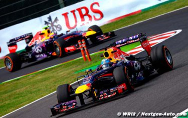

Il fait beau et chaud sur Suzuka à quelques instants du départ du Grand Prix du Japon, quinzième manche du championnat 2013 de F1. La température ambiante est de 24° et celle de la piste est de 37.
Les Red Bull sont sur la première ligne, mais pas dans l’ordre habituel puisque Mark Webber devance Sebastian Vettel. A l’extinction des feux, Romain Grosjean prend un départ parfait et prend la tête dans le premier virage devant Webber, Vettel, Rosberg et Massa.
Giedo van der Garde et Charles Pic envoient immédiatement leur monoplace dans le gravier du premier virage alors que plus loin devant, Hamilton a crevé à l’arrière droit suite à un contact avec l’aileron avant de la Red Bull de Vettel.
Le classement au premier passage : Grosjean, Webber, Vettel, Rosberg, Massa, Alonso, Hulkenberg, Perez, Gutiérrez, Button, Raikkonen, Di Resta, Bottas, Ricciardo, Maldonado, Sutil, Vergne, Chilton, Pic et Hamilton (qui est rentré pour chausser de nouveaux pneus avant d’abandonner quelques tours plus tard).
En tête de la course, Romain Grosjean s’est assuré une avance de 1”1 sur Webber au 6e passage, 3”3 sur Vettel, 7”7 sur Rosberg, 9”1 sur Massa et 9”6 sur Alonso. Chez Red Bull, on conseille à Mark Webber de laisser un plus grand espace entre lui et Grosjean et de revenir sur lui juste avant le premier changement de pneus.
Button, Bottas et Sutil sont les premiers à changer leurs pneus dans le 9e tour. Gutiérrez et Maldonado rentrent au 10e, Hulkenberg, Di Resta au 11e, Webber, Massa, Raikkonen, Chilton au 12e, Grosjean, Rosberg (qui manque de s’accrocher avec Perez et qui sera pénalisé un peu plus tard pour ça), Perez au 13e, Alonso au 14e, Vettel au 15e et Ricciardo au 22e.
Le top 12 au 22e passage :
Button s’arrête au 24e tour, Rosberg au 25e, Webber au 26e, Di Resta au 27e, Bottas, Sutil au 28e, Massa, Maldonado au 29e, Grosjean, Hulkenberg, Chilton au 30e, Alonso, Gutiérrez, Perez au 30e, Raikkonen au 31e, Pic au 37e et Vettel au 38e.
Le top 12 au 38e passage : Webber (qui doit encore s’arrêter une fois), Grosjean (+13”9), Vettel (+16”), Hulkenberg (+46”), Alonso (+49”8), Raikkonen (+50”7), Rosberg (+55”3), Button, Gutiérrez et Massa.
Rosberg s’arrête pour changer ses pneus au 40e tour alors que Vettel dépasse Grosjean et prend virtuellement la tête de la course car Webber qui est en tête de la course doit encore s’arrêter.
Button s’arrête au 41e tour et Webber au 43e. Sebastian Vettel prend donc la tête de la course devant Romain Grosjean et Mark Webber.
En fin de course, Romain Grosjean ne sait pas suivre le rytdme de Sebastian Vettel et voit revenir sur lui Mark Webber qui a chaussé des pneus tendres pour boucler le dernier relais. Pendant ce temps, Alonso a pris l’avantage sur Hulkenberg.
Sebastian Vettel remporte donc une victoire très stratégique et qui démontre une fois de plus que lui et sa Red Bull sont imbattables. Roman Grosjean termine à la troisième place après avoir cédé aux assauts de Mark Webber à deux tours de l’arrivée.
Suivent pour les points : Alonso, Raikkonen, Hulkenberg, Gutiérrez (qui marque ses premiers points), Rosberg, Button et Massa.
Alonso étant à la quatrième place, Sebastian Vettel devra attendre encore un peu pour décrocher son quatrième titre mondial...
Comme disait Racine qui veut aller loin ménage sa monture
| Pos. | Pilote | Equipe | Ecart | Arrêts |
|---|---|---|---|---|
| 01 | Sebastian Vettel | Red Bull Renault | 53 laps - 1h26m49.301s | 2 |
| 02 | Mark Webber | Red Bull Renault | +7.129 | 3 |
| 03 | Romain Grosjean | Lotus Renault | +9.910 | 2 |
| 04 | Fernando Alonso | Ferrari | +45.605 | 2 |
| 05 | Kimi Raikkonen | Lotus Renault | +47.325 | 2 |
| 06 | Nico Hulkenberg | Sauber Ferrari | +51.615 | 2 |
| 07 | Esteban Gutierrez | Sauber Ferrari | +71.630 | 2 |
| 08 | Nico Rosberg | Mercedes AMG | +72.023 | 4 |
| 09 | Jenson Button | McLaren Mercedes | +80.821 | 3 |
| 10 | Felipe Massa | Ferrari | +89.263 | 3 |
| 11 | Paul di Resta | Force India Mercedes | +98.572 | 2 |
| 12 | Jean-Eric Vergne | Toro Rosso Ferrari | +1 lap | 3 |
| 13 | Daniel Ricciardo | Toro Rosso Ferrari | 3 | |
| 14 | Adrian Sutil | Force India Mercedes | 2 | |
| 15 | Sergio Perez | McLaren Mercedes | 3 | |
| 16 | Pastor Maldonado | Williams Renault | 2 | |
| 17 | Valtteri Bottas | Williams Renault | 2 | |
| 18 | Charles Pic | Caterham Renault | 3 | |
| 19 | Max Chilton | Marussia Coswortd | 2 | |
| 20 | Lewis Hamilton | Mercedes AMG | DNF | 2 |
| 21 | Giedo Van der Garde | Caterham Renault | 0 | |
| 22 | Jules Bianchi | Marussia Coswortd | 0 |
Copyright : en savoir plus
{kind=link}